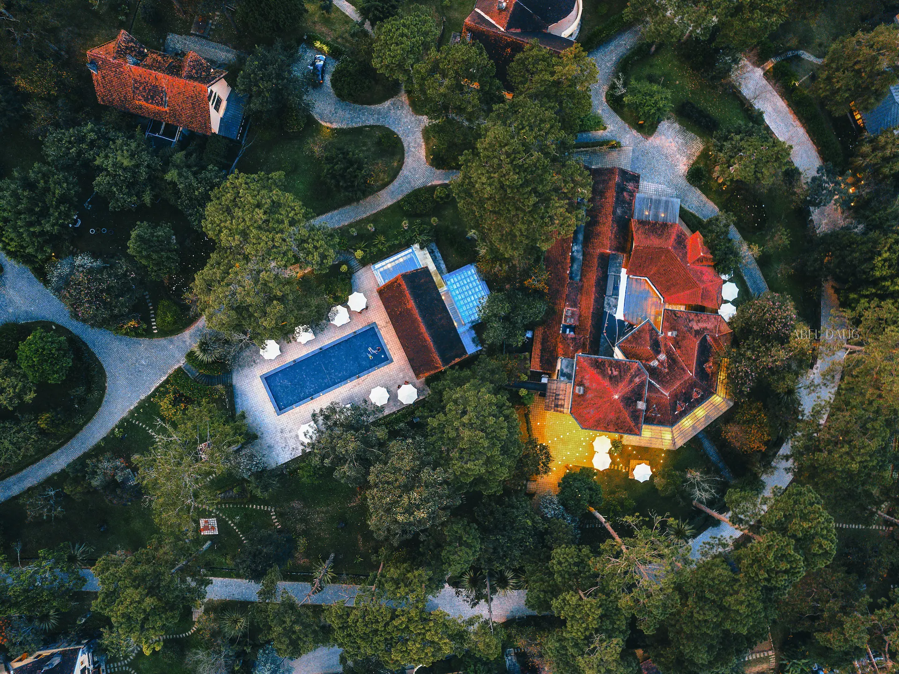
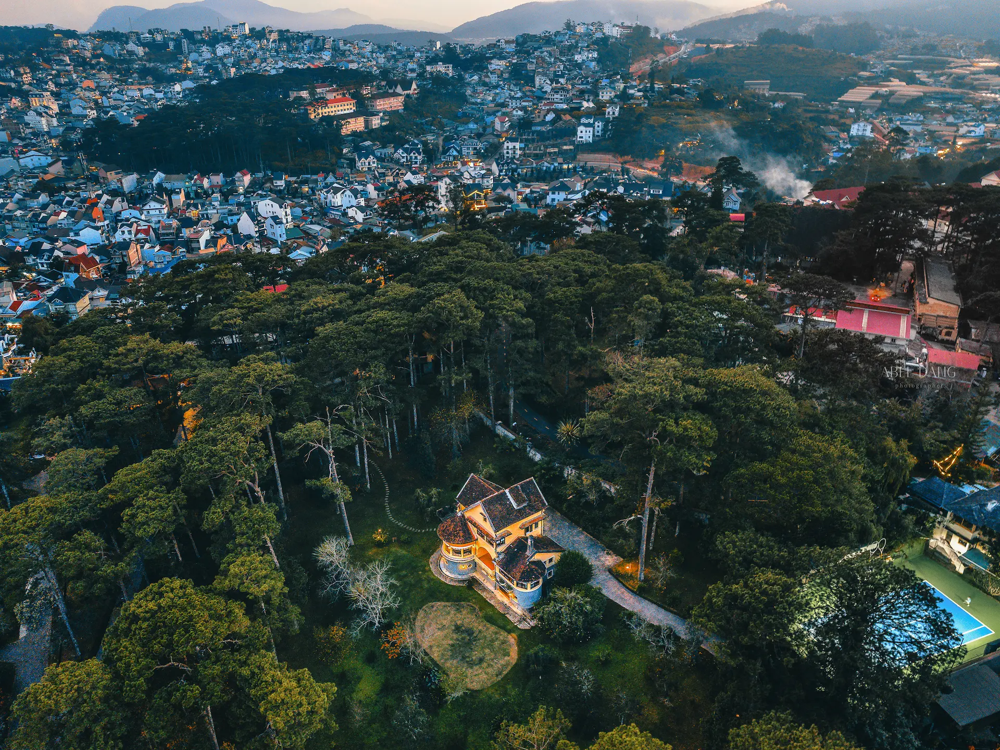
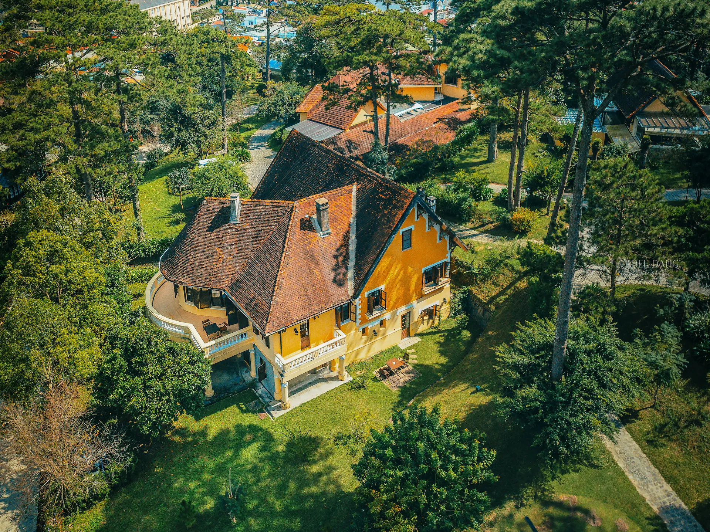

RESORT & SPA
ANA MANDARA VILLAS
Tucked among pine-covered hills and winding stone paths, Ana Mandara Villas Da Lat is one of the few places where the soul of old Da Lat quietly endures. Built between the 1920s and 1930s, the seventeen villas reflect a time when the French colonial administration envisioned this mountain town as the future heart of Indochina. Each villa tells a different story, shaped by distinct architectural influences, from Normandie to Provence, honoring the original design principle that no two homes should be the same. Inside, old fireplaces, wooden shutters, high ceilings, and gently worn staircases evoke the charm of a forgotten French film set high in the Central Highlands.


